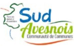
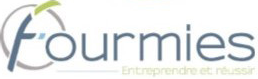

Les chiffres clés au 25 septembre 2018.
A ce jour ce sont plus de 2600 apprenants qui ont été formés ou en cours de formation.
- Personnes formées: 2031
- En cours de formation: 572
- Niveau Bac ou Inférieur: 59%
- Age moyen: 28 ans
- Demandeur d'emploi: 80%
- Femmes: 30%
- Jeunes: 43%
- Seniors de plus de 45 ans: 5%
Nos partenaires et Collaborateurs

Bonjour !
Bienvenue sur le site de l'école du numérique de fourmies

Bonjour !
Bienvenue sur le site de l'école du numérique de fourmies